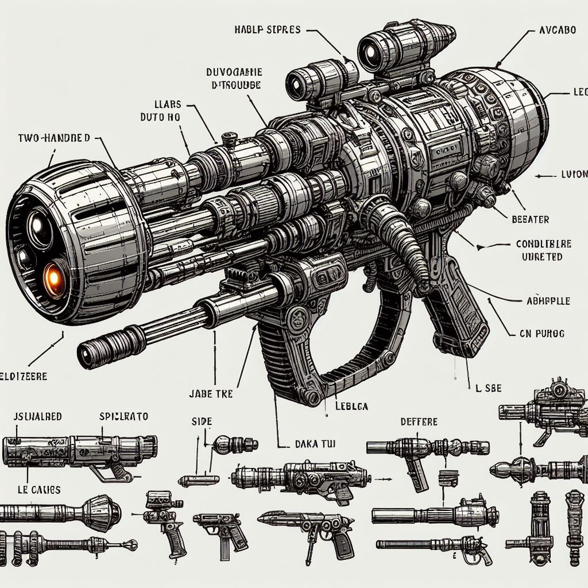

The following documents comprise a compendium of technical specifications and
operational procedures for critical tools employed on the desert planet Arrakis.
Each section is designed to provide Fremen and Guild personnel with a comprehensive
understanding of:
Operational Necessity: A detailed explanation of the tool's function and its
significance within the harsh Arrakis environment.
Classification and Typology: A breakdown of the tool's various models and their
differentiating characteristics.
Operational Instructions: Step-by-step procedures for safe, efficient, and
effective use of the tool in field conditions.
Navigate to the specific tools below to access the corresponding technical manuals.
Background: The Indispensability of Survival Technologies on Arrakis
The unforgiving environment of Arrakis presents a unique challenge for human habitation
and industrial operations. The planet's aridity, characterized by scorching temperatures,
relentless solar radiation, and pervasive sandstorms, necessitates the deployment of
specialized technologies for basic survival and resource exploitation.
This compendium of field manuals details the operational characteristics and protocols
for a selection of such critical tools. Their utilization is demonstrably essential for
the following reasons:
Environmental Hostility Mitigation: The tools detailed within directly address
the lethality of Arrakis' environment. Stillsuits, for example, provide a closed-loop
water recycling system and filtration against deadly airborne particulates, ensuring
personnel survival.
Resource Acquisition Facilitation: Certain tools like Thumpers enable the safe and
efficient harvesting of the planet's most valuable resource – Spice Melange. Without
such specialized equipment, navigating the treacherous desert and extracting the spice
would be near-impossible.
Logistical and Operational Efficiency: Vehicles like Ornithopters provide a means to
traverse the vast Arrakis landscape, defying the limitations imposed by the harsh terrain.
This facilitates rapid deployment, resource transportation, and communication across the
planet.
Tactical Advantage: Lasguns and Holtzman shields equip personnel with offensive and
defensive capabilities, respectively. Given the ever-present dangers of sandworm attacks
and the potential for inter-factional conflict, these tools are vital for ensuring mission
success and personnel safety.
The effective use of the technologies outlined within these manuals directly correlates with an
individual's, or a group's, ability to not only survive on Arrakis, but also thrive in its unforgiving
embrace.
Ornithopter: Single-Pilot Atmospheric Support Craft
The Ornithopter serves as the primary mode of aerial transport on Arrakis. Its unique flapping wing
design allows for efficient low-altitude flight and maneuverability in confined canyons, making it ideal
for navigating the treacherous Arrakis terrain. Additionally, its VTOL (Vertical Take-Off and Landing)
capability eliminates the need for conventional runways, a critical advantage in a landscape dominated
by sand dunes.
Several Ornithopter variants exist, each optimized for specific roles:
Type-XA: The most common variant, this single-pilot craft prioritizes
maneuverability and scouting capabilities. It is equipped with light weaponry
for self-defense.
Type-XB: This heavier transport variant boasts increased cargo capacity
for personnel and supplies. It sacrifices some agility for greater range and
payload capacity.
Type-XC: The heavily-armed "Gunship" variant features enhanced
firepower and armor plating, designed for offensive operations and sandworm
deterrence.
"The 'thopter was a dark shadow in the moonlight, its wings
like a bat's, thin and angular, and the moonlight gleamed
on the round windscreen that covered the cockpit."
Pre-flight Checks:
Conduct a thorough visual inspection of the wings, control surfaces,
and landing gear for signs of damage
or wear.
Verify fuel levels and ensure all auxiliary systems are operational
(communication, navigation, life support).
Calibrate wing articulation mechanisms and engine synchronization.
Flight Operations:
Engage the pre-flight checklist and initiate engine startup sequence.
Utilize the VTOL function for vertical takeoff, transitioning to
horizontal flight mode once a safe altitude is achieved.
Maintain constant awareness of wind conditions, adjusting wing beat
patterns and thrust vectoring to compensate for sandstorms or turbulent
air currents.
Utilize the onboard navigation system for course correction and target
acquisition.
Employ landing gear for controlled descent and touchdown on a level
surface.
Emergency Procedures:
In the event of engine failure, attempt an immediate controlled descent
utilizing remaining lift and glide capabilities.
Deploy emergency landing gear for a soft sand landing if a suitable
flat surface is unavailable.
Engage the emergency beacon to signal distress for retrieval.
Maintenance:
Conduct post-flight inspections to identify and address any potential
issues.
Regular cleaning of the wings and control surfaces is crucial to
maintain optimal flight performance.
Refer to authorized Ornithopter maintenance manuals for detailed
servicing procedures.
Note: Due to the complexities of Ornithopter operation in harsh desert
environments, pilots must undergo rigorous training and possess exceptional
situational awareness to fly these craft effectively.
Thumper: Model 683 Seismic Sandworm Lure
The Thumper serves as a vital tool for Spice Melange harvesting on Arrakis.
Its function lies in attracting the colossal sandworms, the desert's apex predators,
which leave behind valuable Spice deposits upon their demise. By strategically
deploying and operating Thumpers, Spice harvesters can indirectly control sandworm
movement and maximize Spice collection efficiency.
While the core functionality remains consistent, Thumpers come in various sizes
and configurations:
Light Thumper (Model 683L): This mobile variant is ideal for scouting and
exploration purposes. It utilizes a single, powerful seismic hammer for
localized worm attraction.
Heavy Thumper (Model 683H): Designed for large-scale Spice extraction
operations, this stationary Thumper features multiple seismic hammers and
extended battery life for prolonged use.
Mobile Thumper Array (MTA): A specialized configuration consisting of several
interconnected Light Thumpers, offering precise control over sandworm movement
and herding them towards designated harvesting zones.
"The great Thumper shuddered, its colossal head a rhythmic pulse against
the bruised heaven. The desert floor trembled with a vibration that ran
out like a living thing, a deep basso pulse that seemed to penetrate the
very bone." (Frank Herbert, Dune)
Pre-Deployment Checks:
Ensure the Thumper's battery is fully charged and operational.
Verify the seismic hammer's integrity and functionality.
Calibrate the Thumper's seismic frequency to match local sandworm
resonance patterns.
Deployment and Operation:
Identify a suitable location for Thumper deployment, ideally near
known Spice deposits.
Activate the Thumper's seismic hammer to generate low-frequency
vibrations that mimic sandworm mating calls.
Monitor the surrounding area for sandworm activity and adjust the
Thumper's output frequency to attract or repel the creatures as needed.
Coordinate with Spice harvesters to ensure timely collection of Spice
once sandworms have been lured and neutralized.
Safety Protocols:
Maintain a safe distance from the Thumper during operation to avoid
attracting sandworm attention.
In the event of sandworm aggression, activate emergency repellent
measures and retreat to a secure location.
Exercise caution when approaching harvested Spice deposits, as
sandworms may still pose a threat.
Maintenance:
Perform regular inspections of the Thumper's components for wear
and tear.
Clean and lubricate the seismic hammer mechanism to ensure optimal
performance.
Conduct routine maintenance on the power source and cooling systems
to ensure optimal performance.
Refer to the Thumper maintenance manual for detailed servicing
procedures and troubleshooting guidelines.
Note: Thumper operators must undergo specialized training to effectively
deploy and manage these devices, as improper use can lead to catastrophic
consequences for both personnel and Spice harvesting operations.
Stillsuit: Personal Water Conservation & Distillation Suit
The Stillsuit serves as a self-contained environmental life support
system, critical for survival on the harsh desert planet of Arrakis.
It is designed to:
Reclaim and Filter Moisture: The Stillsuit captures and
filters bodily perspiration, urine, and exhaled moisture,
extracting water for reuse. This process also removes impurities
such as bacteria and salt, ensuring a clean water supply.
Regulate Body Temperature: The suit's multi-layered
construction provides insulation against extreme temperature
fluctuations, keeping the wearer cool during the scorching
days and warm during the frigid nights.
Protect Against Sand and Dust: The Stillsuit's outer
membrane is resistant to abrasion and particulate penetration,
shielding the wearer from the abrasive effects of blowing sand
and dust storms.
While the core functionality remains similar, Stillsuit designs can
vary depending on the wearer's profession and cultural background:
Fremen Stillsuit: The traditional Fremen design features
a rugged, utilitarian appearance, optimized for long-term survival
in the desert. It incorporates sand-resistant fabrics and a
distinctive hood for protection against sandstorms.
Spice Harvester Stillsuit: Designed for workers in the
Spice extraction industry, this Stillsuit emphasizes durability
and ease of maintenance. It includes reinforced joints and
specialized pockets for carrying essential tools and equipment.
Research Expedition Stillsuit: Tailored for scientific
explorers and researchers, this Stillsuit includes integrated
data collection devices and sample storage compartments. It
allows researchers to conduct field studies in extreme
environments.
Security Forces Stillsuit: This combat-oriented design
features reinforced armor plating and integrated weapon
holsters for law enforcement and military personnel. It
provides protection against ballistic threats and hostile
environments.
"Paul pulled the hood of his stillsuit tight, shutting out the
glare of the sun. The desert wind sang a mournful song in his
ears, but the suit's filters kept out the dust. Sweat trickled
down his cheeks, but it was caught by the suit's reclaiming
tubes, its coolness a brief comfort." (Frank Herbert, Dune)
Operational Instructions:
Conduct a visual inspection of the suit for tears, punctures,
or damage to the filtration system. Repair or replace damaged
components as necessary before proceeding.
Don the Stillsuit, ensuring a snug fit to maximize moisture
reclamation efficiency. Secure all fasteners and seals to
prevent leaks.
Activate the moisture reclamation system by engaging the
control panel located on the suit's chest. Monitor the
filtration process and adjust settings as needed. The system will
automatically recycle moisture and dispense clean, drinkable water.
Care and Maintenance:
After each use, rinse the Stillsuit with clean water to remove
accumulated salts and impurities. Hang the suit to dry in a
well-ventilated area.
Periodically inspect the filtration system and replace filters
according to the manufacturer's guidelines. Failure to maintain
the filtration system can compromise water quality and wearer
safety.
Store the Stillsuit in a cool, dry location away from direct
sunlight and extreme temperatures. Avoid contact with corrosive
chemicals or abrasive surfaces.
Note: The Stillsuit is a critical piece of survival equipment
on Arrakis, and proper care and maintenance are essential to ensure
its continued functionality and the wearer's well-being. If you find
yourself unable to properly care for your Stillsuit, contact your
authorized dealer or distributor for assistance.
Lasgun: Infantry Laser Rifle
The Lasgun serves as the primary weapon for Fremen and planetary defense
forces on Arrakis. Its function lies in delivering focused beams of laser
energy, capable of neutralizing both human and sandworm threats. Lasguns
offer several advantages:
High Energy Output: Lasguns deliver concentrated laser beams
that can penetrate armor and other defensive barriers, making them
effective against a wide range of targets.
Long Range Precision: The coherent nature of laser energy allows
for accurate targeting at extended distances, providing snipers and
marksmen with a distinct advantage.
Minimal Recoil: Unlike conventional firearms, Lasguns produce
minimal recoil, enabling rapid follow-up shots and sustained fire
control.
Lasguns come in various configurations to suit different combat roles:
Standard Lasgun: The basic model used by Fremen warriors and
security personnel. It features a compact design and adjustable power
settings for versatile combat applications.
Sniper Lasgun: Equipped with enhanced optics and precision
targeting systems, this variant is optimized for long-range engagements
and counter-sniper operations.
Heavy Lasgun: A larger, more powerful model designed for
suppression fire and anti-vehicle operations. It features an extended
energy cell for sustained combat engagements.

"The Lasgun hummed to life, its targeting reticle glowing
in the darkness. The Fremen warrior took aim, his finger
steady on the trigger. In the distance, the sandworm
stirred, sensing the threat." (Frank Herbert, Dune)
Operational Instructions:
Ensure the Lasgun's energy cell is fully charged and operational.
Verify the power settings and safety mechanisms before engaging
the weapon.
Align the targeting reticle with the desired target and activate the
firing mechanism. Exercise caution when discharging the weapon, as
the laser beam is highly visible and can reveal the shooter's position.
Monitor the energy cell's charge level and adjust power settings
based on combat conditions. Lower power settings conserve energy
but may require multiple shots to neutralize a target.
Practice trigger discipline and muzzle control to prevent accidental
discharges and collateral damage. Treat the Lasgun with the respect
due to a lethal weapon.
Maintenance:
Clean the Lasgun's optics and emitter lens regularly to maintain
beam clarity and focus. Use a microfiber cloth to remove dust and
debris.
Inspect the energy cell contacts for corrosion or damage. Clean
the contacts with a dry cloth or contact cleaner to ensure proper
electrical conductivity.
Lubricate the weapon's moving parts and trigger mechanism to
prevent jamming and ensure smooth operation. Use a light gun oil
or lubricant suitable for laser weapons.
Store the Lasgun in a secure, climate-controlled environment to
prevent damage from moisture, dust, or extreme temperatures.
Follow manufacturer guidelines for long-term storage.
Note: The Lasgun is a powerful and versatile weapon, but its
effectiveness is dependent on the skill and training of the operator.
Proper maintenance and care are essential to ensure reliable performance
in combat situations. Remember, safety is paramount when handling
firearms of any kind.
Holtzmann Shield: Personal Dispersion Field Generator (PFDG)
The Holtzman Shield serves as a vital defensive tool for Fremen warriors
and Guild personnel on Arrakis. This portable personal energy field effectively
disrupts the movement of objects exceeding a certain velocity, rendering projectile
weapons (bullets, thrown blades) useless. This technology offers a significant
tactical advantage in a world where close-quarter combat reigns supreme.
While the core functionality remains consistent, Holtzmann shield generators come
in two primary configurations:
Fremen Shield Generator: A lightweight and backpack-mounted variant, favored
for its mobility. It provides adequate protection against bladed weapons and
low-velocity projectiles.
Guild Shield Generator: A heavier and more powerful variant utilized by Guild
Navigators and elite troops. It offers enhanced protection against high-velocity
projectiles and even sandworm attacks (with limitations).
"The Holtzmann Shield hummed to life, its energy field shimmering
around the Fremen warrior. The blade struck the shield, its momentum
dissipated in a flash of light. The warrior stood unharmed, his
shield intact." (Frank Herbert, Dune)
Operational Instructions:
Activate the Holtzmann Shield by engaging the power switch located on the
generator unit. The shield will emit a visible energy field around the
wearer, indicating its operational status.
Maintain a constant awareness of the shield's power level and integrity.
The shield will deactivate automatically if the energy supply is depleted
or compromised.
Avoid sudden movements or impacts that exceed the shield's energy dissipation
threshold. Rapid or forceful actions can cause the shield to flicker or
deactivate temporarily.
Coordinate with allies to ensure mutual coverage and protection. Holtzmann
Shields are most effective when deployed in a cohesive defensive formation.
Deactivation: Depress the deactivation switch on the backpack harness to
deactivate the shield field. The hum and glow will cease.
Maintenance:
Check the power supply connections and energy output indicators for
anomalies.
Clean the shield emitter nodes and energy field sensors to ensure optimal
performance. Use a soft cloth or brush to remove dust and debris.
Recharge the shield generator's power cells after each deployment to
maintain full operational capacity. Follow manufacturer guidelines for
charging and storage.
Store the Holtzmann Shield in a secure, climate-controlled environment
to prevent damage from moisture or extreme temperatures. Avoid exposure
to electromagnetic interference sources.
Note: Holtzmann Shield technology is a double-edged sword, offering
unparalleled protection against conventional weapons while imposing limitations
on the wearer's mobility and situational awareness. Proper training and coordination
are essential to maximize the shield's defensive capabilities and ensure the safety
of all personnel.
Refrences
The technical specifications and operational procedures outlined in this compendium
are derived from a variety of sources, including: